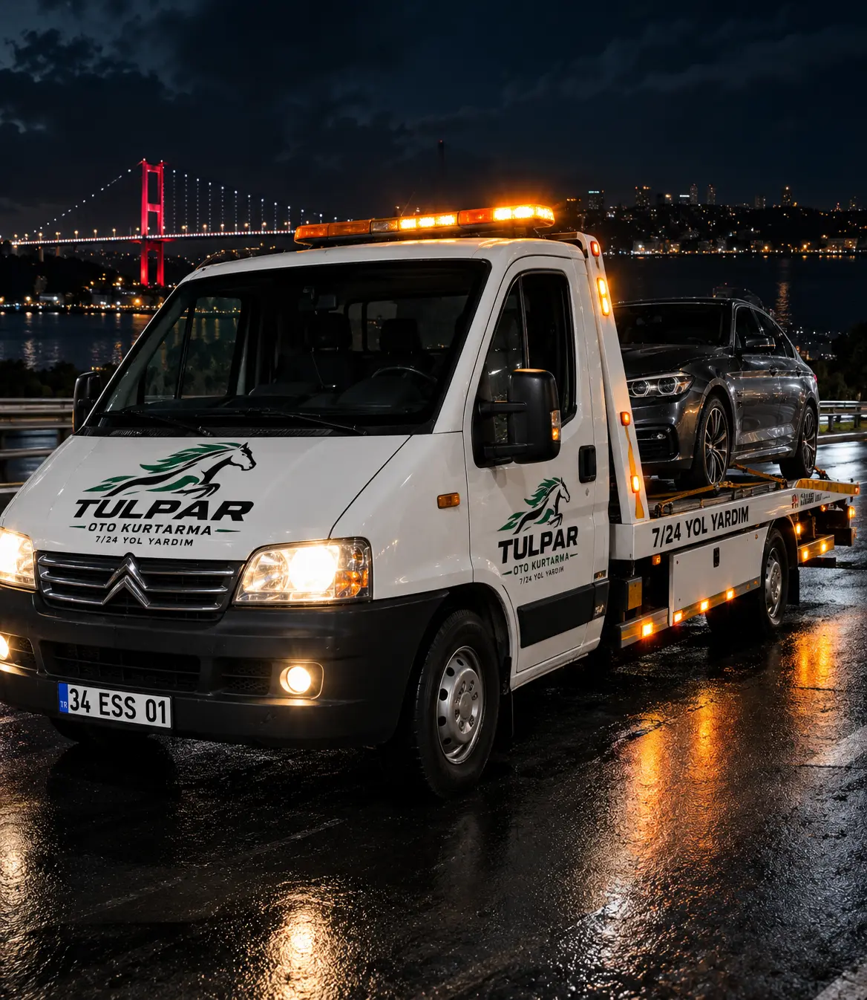

.webp) HEMEN ARA
HEMEN ARA
İSTANBUL OTO ÇEKİCİ
ARAÇ ÇEKİCİ & OTO KURTARMA
Aracınız yolda kaldıysa konumunuza en yakın çekiciyi hızlıca yönlendiriyoruz. İstanbul genelinde 7/24 oto çekici, araç taşıma ve oto kurtarma desteği.
HİZMETLER
Aracınızı bulunduğu noktadan güvenli şekilde taşıma.
Yolda kalan araçlar için konuma göre çekici yönlendirme.
Hareket edemeyen araçlarda uygun kurtarma yönlendirmesi.
7/24 acil çekici ihtiyacında hızlı iletişim ve yönlendirme.
HİZMET BÖLGELERİ
Başakşehir ve İstanbul Avrupa Yakası başta olmak üzere konumunuza uygun araç yönlendirmesi sağlıyoruz.
SIK SORULAN SORULAR
Çekici ne kadar sürede gelir?
Süre konum, trafik ve en yakın aracın müsaitliğine göre değişir.
Çekici fiyatları ne kadar?
Fiyat; konum, mesafe ve aracın durumuna göre değişir.
Hangi araçları çekiyorsunuz?
Binek, SUV ve uygun hafif ticari araçlar için çekici ve oto kurtarma yönlendirmesi sağlıyoruz.
HEMEN İLETİŞİME GEÇİN
Konumunuzu ve ihtiyacınızı paylaşın; uygun yönlendirme ve güncel fiyat bilgisi için bizi arayın.
☎️ Hemen Ara